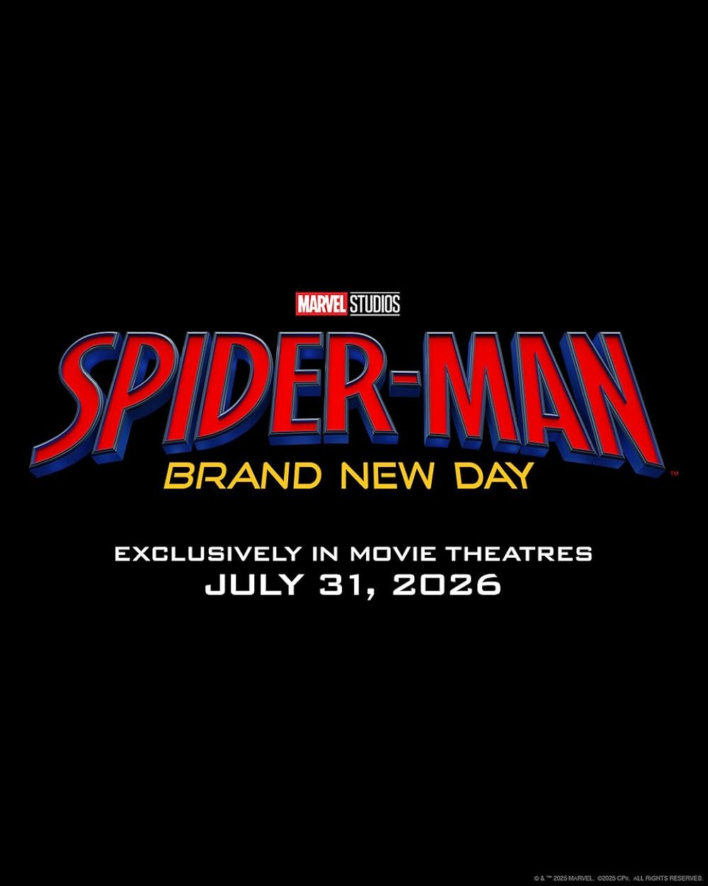
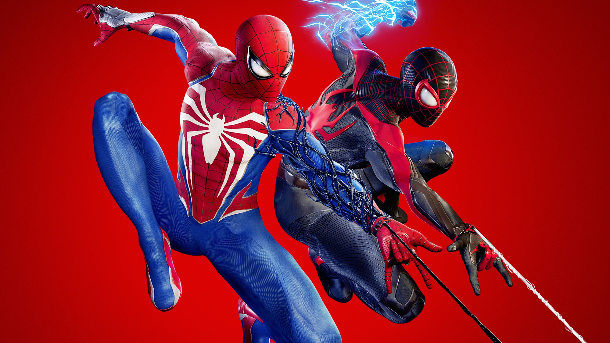
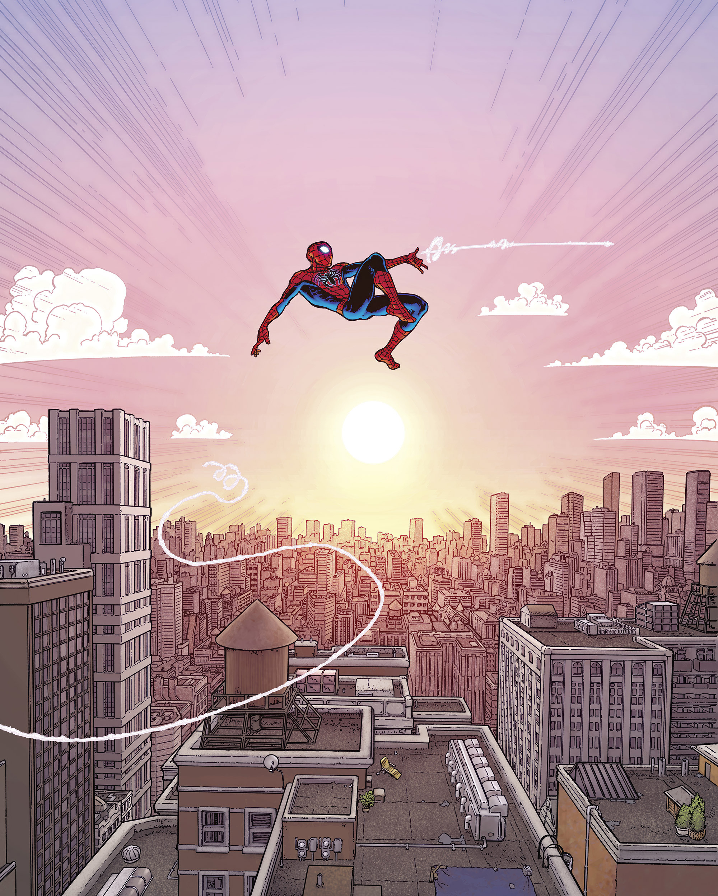

Actualites
Spider-Man 4 : la date de sortie enfin devoilee

Marvel et Sony ont officiellement confirme la preparation de Spider-Man 4 avec Tom Holland. Le film sera realise par Destin Daniel Cretton, connu pour Shang-Chi, ce qui laisse penser a une approche plus serieuse et plus mature pour ce nouvel episode.
Ce quatrieme film devrait jouer un role important dans la reconstruction du MCU, actuellement en pleine transition. Spider-Man y occuperait une place centrale, servant de personnage pivot entre plusieurs futurs projets Marvel. L’histoire suivrait un Peter Parker plus adulte, isole apres No Way Home, confronte a des enjeux plus realistes et urbains.
Source : EcranLarge
La serie Spider-Man Noir avance : Nicolas Cage officiellement confirme

La future serie Spider-Man Noir, produite par Amazon et Sony, continue de se preciser. L’information la plus marquante est la confirmation officielle de Nicolas Cage dans le role principal. Il incarnera une version live-action du personnage qu’il avait deja double dans Spider-Man: Into the Spider-Verse.
L’histoire se deroulera dans un New York des annees 1930, sombre et inspire du style polar. Elle suivra un Spider-Man plus age et desabuse, evoluant dans une ambiance tres differente des productions Marvel habituelles. Le ton annonce est plus mature, avec une esthetique proche du film noir classique.
Le projet est supervise par Oren Uziel et Steve Lightfoot, deux scenaristes habitues aux series d’action. Amazon mise beaucoup sur cette serie, qui sera l’un de ses projets phares aux cotes de The Boys et Fallout.
Source : Variety
Mort de Danny Seagren

Danny Seagren, acteur et artiste des annees 1970, est decede a l’age de 81 ans.
Il avait marque l’histoire du personnage en incarnant Spider-Man dans l’emission educative Spidey Super Stories (1974–1977), diffusee dans le cadre du programme pour enfants The Electric Company. Dans cette version, Spider-Man n’avait pas de dialogues : il communiquait uniquement par des bulles de bande dessinee, ce qui donnait au personnage un style tres particulier et immediatement reconnaissable.
A une epoque ou les super-heros n’etaient presque jamais adaptes a la television, Seagren est considere comme le tout premier acteur a avoir porte le costume de Spider-Man a l’ecran. Son interpretation a contribue a populariser le heros aupres d’une generation d’enfants, bien avant les films modernes de Sam Raimi ou du MCU.
Source : Le Figaro
Spider-Man 2 (PS5) : enorme mise a jour

Insomniac Games a deploye une mise a jour particulierement importante pour Spider-Man 2 sur PS5, destinee a enrichir l’experience de jeu plusieurs mois apres sa sortie.
Cette update introduit enfin le tres attendu New Game+, permettant aux joueurs de recommencer l’aventure avec toutes leurs competences, gadgets et ameliorations deja debloquees. De nouveaux costumes ont egalement ete ajoutes pour Peter et Miles, offrant plus de variete visuelle et de personnalisation.
Le patch apporte aussi des ameliorations graphiques, une optimisation generale des performances, ainsi que davantage d’options d’accessibilite pour rendre le jeu plus confortable et inclusif. L’ensemble renforce la rejouabilite et prolonge la duree de vie du titre, ce qui en fait la mise a jour la plus consequente depuis le lancement du jeu.
Source : Actualites jeux video (20 Minutes / JV)
.gif)
Pourquoi ce site ?
Ce site est une encyclopédie dédiée à l’univers de Spider-Man. Il regroupe tous les personnages emblématiques, les films, les séries, les jeux vidéo et les actualités autour du héros. À travers une navigation claire et une interface dynamique, le visiteur peut explorer le multivers de Spider-Man, découvrir chaque version du héros, ses alliés, ses ennemis et les différentes adaptations qui ont marqué l’histoire. L’objectif est d’offrir une plateforme complète, accessible et immersive pour tous les fans, qu’ils soient novices ou passionnés de longue date.
